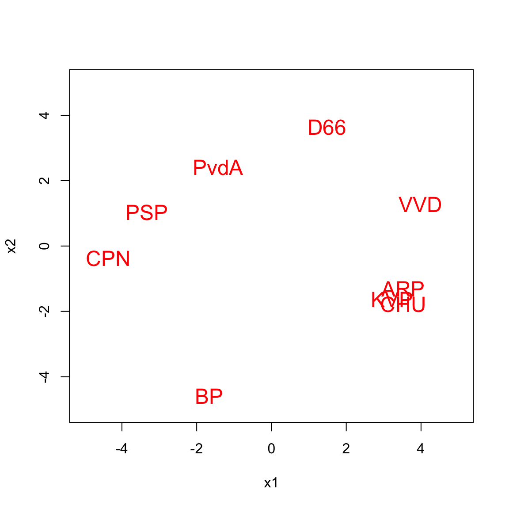
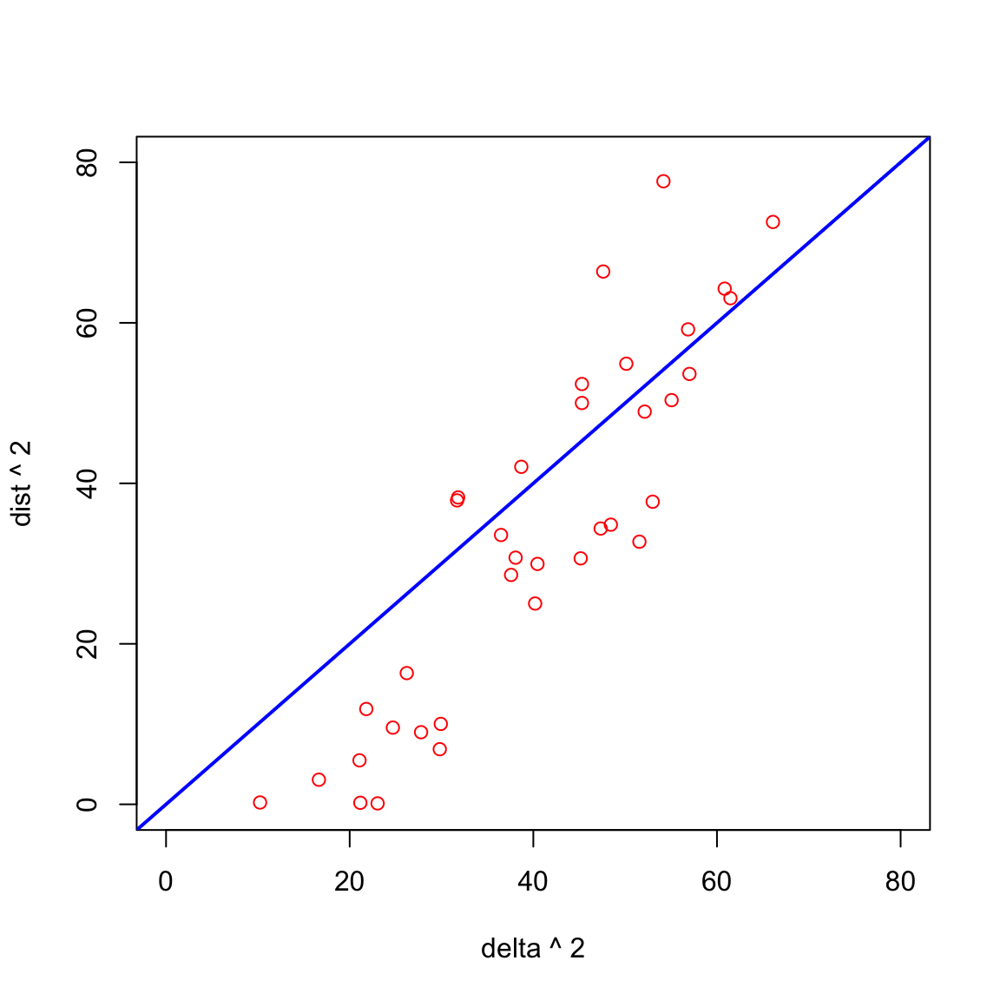
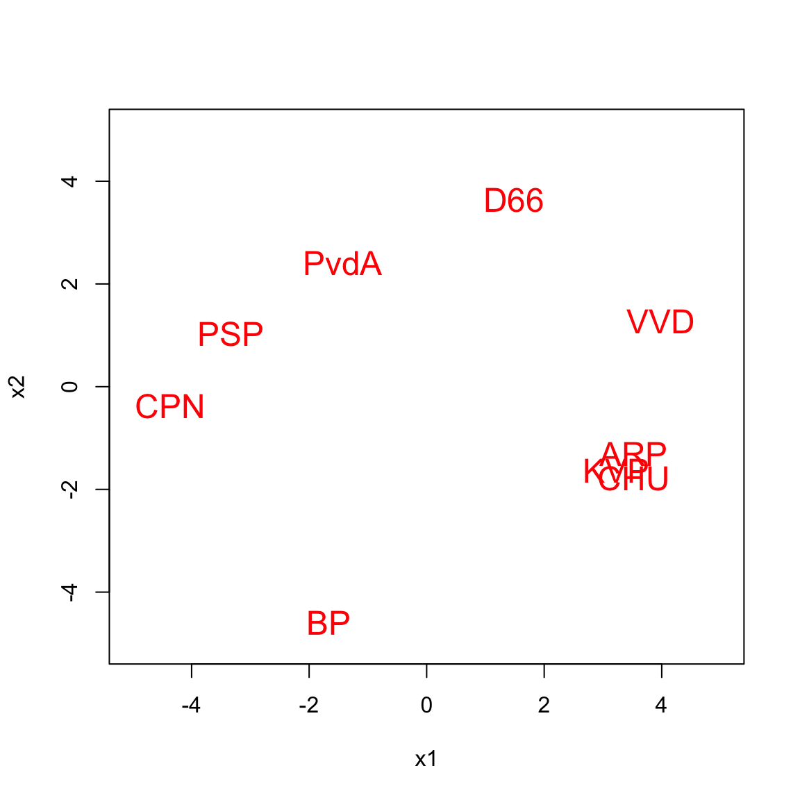
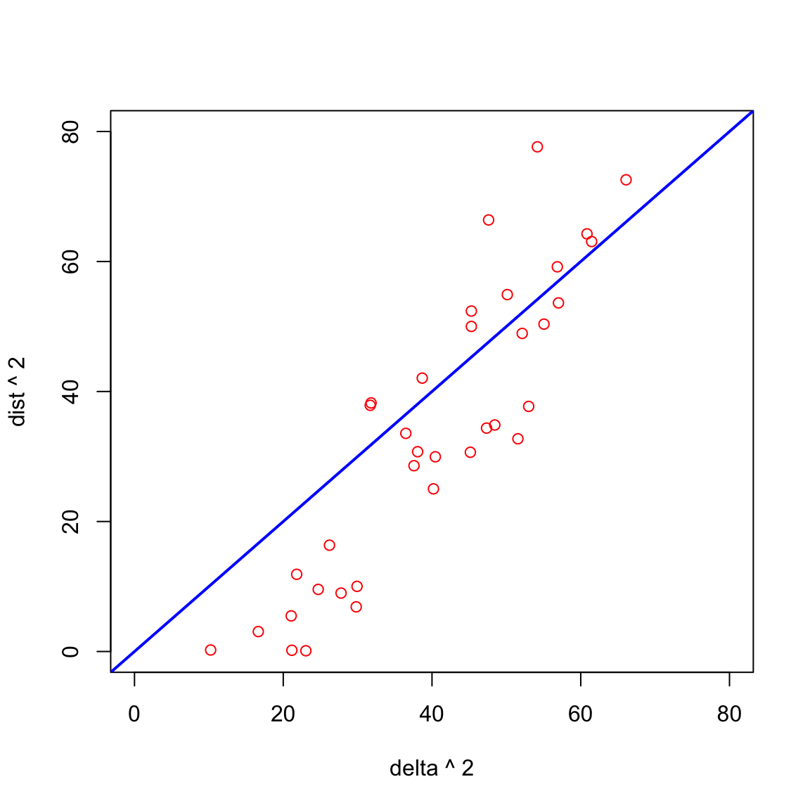

s# Sstress and strain {#chsstressstrain}
Takane, Young, and De Leeuw (1977) gave \(\sigma_2\) the name sstress. Thus sstress is defined as
\[ \sigma_2(X):=\mathop{\sum\sum}_{1\leq i<j\leq n}w_{ij}(\delta_{ij}^2-d_{ij}^2(X))^2 \]
On the space of configurations sstress is mathematically much better behaved as stress. It is a non-negative multivariate polynomial of degree four, actually a sum-of-squares or SOS polynomial (ref).
It is everywhere infinitely many times differentiable everywhere and, in principle at least, we can compute all real-valued configurations where the derivatives of sstress vanish by algebraic methods. That includes all local minima, and thus also the global minimum. Unfortunately in almost all MDS applications the number of variables is too large to apply the usual algebraic methods.
nonnegative polynomials of degree four – general algebra
Clearly configurations with small stress will tend to have small sstress, and vice versa.
weighting residuals – fitting large dissimilarities
\[ \sum d_{ij}^2(\delta_{ij}^2-d_{ij}^2)=0 \]
We can write sstress as
\[\begin{equation} \sigma_2(X)=\mathop{\sum\sum}_{1\leq i<j\leq n}w_{ij}(\delta_{ij}+d_{ij}(X))^2(\delta_{ij}-d_{ij}(X))^2. \end{equation}\]
Thus if the \(d_{ij}(X)\) provide a good fit to the \(\delta_{ij}\) we have the approximation
\[\begin{equation} \sigma_2(X)\approx 4\mathop{\sum\sum}_{1\leq i<j\leq n}w_{ij}^{\ }\delta_{ij}^2(\delta_{ij}-d_{ij}(X))^2 (\#eq:sstressapp) \end{equation}\]
Since \(\mathcal{D}f(\delta)=2\delta\) in this case, @ref(eq:sstressapp) also follows from @ref(eq:wfstress).
Now
\[\begin{equation} \frac{\sigma_2(X)}{\sigma(X)}=\frac{\mathop{\sum\sum}_{1\leq i<j\leq n}w_{ij}(\delta_{ij}+d_{ij}(X))^2(\delta_{ij}-d_{ij}(X))^2}{\mathop{\sum\sum}_{1\leq i<j\leq n}w_{ij}^{\ }(\delta_{ij}-d_{ij}(X))^2}. \end{equation}\]
This is a weighted average of the quantities \((\delta_{ij}+d_{ij}(X))^2\), and thus
\[\begin{equation} 4\{\min(\delta_{ij}+d_{ij}(X))\}^2\sigma(X)\leq\sigma_2(X)\leq 4\{\max(\delta_{ij}+d_{ij}(X))\}^2\sigma(X). \end{equation}\]
\[\sigma_2(X)=1-2\rho_2(X)+\eta_2^2(X)\] \[\sigma_2(\alpha X)=1-2\alpha^2\rho_2(X)+\alpha^4\eta_2^2(X)\] At a minimum \(\rho_2(X)=\eta_2^2(X)\) and thus \(\sigma(X)=1-\eta_2^2(X)\), which implies \(\eta_2(X)\leq 1\).
Thus minimizing \(\sigma_2\) means maximizing \(\rho_2\) over \(\eta_2(X)\leq 1\), which is the same thing as minimizing \(\eta_2\) over \(\rho_2(X)\geq 1\). Both are reverse convex problems.
\[ \eta_2(X)=\sqrt{\sum\sum w_{ij}d_{ij}^4(X)}\geq\frac{1}{\sqrt{\sum\sum w_{ij}d_{ij}^4(Y)}}\sum\sum w_{ij}d_{ij}^2(Y)d_{ij}^2(X) \] Thus maximizing \(\rho_2\) with \(\rho_2(X)=\text{tr}\ X'B_0X\) over \(\text{tr}\ X'B_2(Y)X\leq 1\) for all \(Y\).
At a local minimum partitioning
Theorem: The set of squared Euclidean distance matrices between \(n\) points \(\mathfrak{D}:=\{D\mid D=D^{(2)}(X)\}\) is a closed convex cone.
Proof. It suffices to observe that \(\alpha D^{(2)}(X)=D^{(2)}(\sqrt(\alpha)X)\) and \(D^{(2)}(X)+D^{(2)}(Y)=D^{(2)}(X\mid Y)\). Alternatively, \(\mathfrak{D}\) is the intersection of two convex cones, and thus convex. The first cone are the hollow non-negative symmetric matrices and the second cone are the symmetric matrices \(D\) for which \(-JDJ\gtrsim 0\).
Corollary: \[\min_{D\in\mathfrak{D}}\ \mathop{\sum\sum}_{1\leq i<j\leq n}w_{ij}(\delta_{ij}^2-d_{ij})^2\] is a convex problem with a unique minimum.
Polar cone
\[ \mathop{\sum\sum}_{1\leq i<j\leq n} w_{ij}e_{ij}\text{tr}\ A_{ij}C\leq 0 \] for all \(C\gtrsim 0\). Thus we must have \(\mathop{\sum\sum}_{1\leq i<j\leq n} w_{ij}e_{ij}A_{ij}\lesssim 0\)
\[ D\in\mathfrak{D},\\ \Delta-D\in\mathfrak{D}^o\\ \text{tr}\ W\times D(\Delta-D)=0 \]
What is the polar cone \(\mathfrak{D}^o\)
Since \(d_{ij}^2=c_{ii}+c_{jj}-2c{ij}\) it follows that \(\sigma_2\) is a convex quadratic in \(C\) and that minimizing \(\sigma_2\) over \(C\gtrsim 0\) is a convex problem, just as minimizing \(\sigma_1\) over \(C\gtrsim 0\) is.
But difference –
\[ \mathop{\sum\sum}_{1\leq i<j\leq n}w_{ij}(\delta_{ij}^2-\text{tr}\ A_{ij}C)^2 \] \[ \mathcal{D}\sigma_2(C)=-2\mathop{\sum\sum}_{1\leq i<j\leq n}w_{ij}(\delta_{ij}^2-\text{tr}\ A_{ij}C)A_{ij} \] \[ B_2(C):=\mathop{\sum\sum}_{1\leq i<j\leq n}w_{ij}d_{ij}^2(C)A_{ij} \]
Weights !! Polar cone !
\[\begin{align} \begin{split} C&\gtrsim 0,\\ V_2-B_2(C)&\gtrsim 0,\\ \text{tr}\ C(V_2-B_2(C))=0. \end{split} \end{align}\]
gower2 rank
The first published paper on sstress minimization, with detailed algorithm and computer program, was Takane, Young, and De Leeuw (1977). There are some historical precursors, but they are mostly in internal memos, and they usually did not come with software. The ALSCAL program (Young, Takane, and Lewyckyj (1978b)) was widely distributed through SPSS and SAS and is still used regularly in various areas of research.
In this section of the book we will discuss basic ALSCAL, i.e. the sstress version of basic MDS scaling. As usual, we generalize to weighted least squares, but for now we ignore the individual differences and the non-metric parts.
It is also worth noting that in the original version of ALSCAL, from Takane, Young, and De Leeuw (1977), the configuration is fitted by an alternating least squares algorithm that changes all \(p\) coordinates of each point simultaneously, and then cycles through the points. The minimization over coordinates is done with a safeguarded Newton-Raphson method. At the time I forcefully objected to this. Sstress is a \(p\)-dimensional quartic, and because \(p\) is usually small fiding the global minimum with algebraic methods is at least conceivable. But in terms of simplicity, it is much better to change a single coordinate at the time, meaning that one cycle consists of finding the global minimum of \(np\) univariate quadrics. There is some acknowledgement of this in section 5 of Takane, Young, and De Leeuw (1977), but the paper is quite verbose and it can easily be overlooked. My understanding, based on Young, Takane, and Lewyckyj (1978a), is that later versions of ALSCAL did indeed adopt one-dimensional cyclic coordinate descent (CCD). And this is what we will discuss here.
First note that sstress can be decomposed in the same way as stress. We have \[\begin{equation} \sigma_2(X)=1-2\rho_2(X)+\eta_2^2(X) (\#eq:sstressdec) \end{equation}\] with \[\begin{align} \begin{split} \rho_2(X)&:=\mathop{\sum\sum}_{1\leq i < j\leq n} w_{ij}^{\ }\delta_{ij}^2d_{ij}^2(X),\\ \eta_2^2(X)&:=\mathop{\sum\sum}_{1\leq i < j\leq n} w_{ij}^{\ }d_{ij}^4(X). \end{split} (\#eq:sstresstwo) \end{align}\]
Both \(\rho_2\) and \(\eta_2^2\) are convex, \(\rho_2\) is quadratic and \(\eta^2_2\) is a quartic (in fact, a sum of squares of quadratics).
In CCD we replace \(x_{ks}\) by \(\tilde x_{ks}:=x_{ks}+\epsilon\). Or, in matrices, \(\tilde X:=X+\epsilon\ e_k^{\ }e_s'\). Only the \(d_{ij}^2(\tilde X)\) with \(i=k\) or \(j=k\) differ from the corresponding \(d_{ij}(X)\). All these \(d_{ik}^2(\tilde X)\) are now just a function of \(\epsilon\) and thus we write \[\begin{equation} d_{ik}^2(\epsilon):=d_{ik}^2(\tilde X)=d_{ik}^2(X)-2\epsilon u_i+\epsilon^2. (\#eq:ddeps) \end{equation}\] where \(u_i:=x_{is}-x_{ks}\). Also \[\begin{equation} d_{ik}^4(\epsilon)=d_{ij}^4(X)-4\epsilon u_i^{\ }d_{ik}^2(X)+2\epsilon^2(d_{ik}^2(X)+2 u_i^2)-4\epsilon^3u_i+\epsilon^4. (\#eq:ddddeps) \end{equation}\] Combining @ref(eq:ddeps) and @ref(eq:ddddeps) with @ref(eq:sstressdec) gives \[\begin{equation} \rho_2(\epsilon)=\rho_2(0)-2\epsilon\sum_{i=1}^n w_{ik}^{\ }\delta_{ik}^2u_i^{\ }+\epsilon^2\sum_{i=1}^n w_{ik}^{\ }\delta_{ik}^2 (\#eq:rhoeps) \end{equation}\] and \[\begin{equation} \eta^2_2(\epsilon)=\eta_2^2(0)-4\epsilon\sum_{i=1}^nw_{ik}^{\ }d_{ik}^2(X)u_i+2\epsilon^2\sum_{i=1}^nw_{ik}^{\ }(d_{ik}^2(X)+2u_i^2)-\\ 4\epsilon^{3}\sum_{i=1}^nw_{ik}^{\ }u_i^{\ }+\epsilon^4\sum_{i=1}^nw_{ik}^{\ } (\#eq:etaeps) \end{equation}\] and finally \[\begin{equation} \sigma_2(\epsilon)=\sigma_2(0)-4\epsilon\sum_{i=1}^nw_{ik}^{\ }(d_{ik}^2(X)-\delta_{ik}^2)u_i+2\epsilon^2\sum_{i=1}^nw_{ik}^{\ }((d_{ik}^2(X)-\delta_{ik}^2)+2u_i^2)-\\ 4\epsilon^{3}\sum_{i=1}^nw_{ik}^{\ }u_i^{\ }+\epsilon^4\sum_{i=1}^nw_{ik}^{\ } (\#eq:stresseps) \end{equation}\]
Convex, DC, derivative
Jeffrey
Code
Example
Query: is \(\sigma_2\) a convex quartic in \(\epsilon\) ? Does \(\mathcal{D}\sigma_2(\epsilon )=0\) always have a single root.


1.7957662^{4} after 55 iterations
Try global minimum over points (p-dimensonal quartic)
\[ \sum\sum w_{ij}\{\text{tr} A_{ij}C\}^2\leq\lambda\ \text{tr}\ C^2. \] Better maybe (check this)
\[ \sum\sum w_{ij}\{\text{tr}\ A_{ij}C\}^2\leq\lambda\sum\sum w_{ij}c_{ij}^2. \]
\[ \sigma(C)=\sigma(\tilde C+(C-\tilde C))=1-2\sum\sum w_{ij}\delta_{ij}\text{tr}\ A_{ij}(\tilde C+(C-\tilde C))+\\\sum\sum w_{ij}\{\text{tr}\ A_{ij}(\tilde C+(C-\tilde C)\}^2=\\ 1-2\sum\sum w_{ij}\delta_{ij}\text{tr}\ A_{ij}\tilde C-2\sum\sum w_{ij}\delta_{ij}\text{tr}\ A_{ij}(C-\tilde C)+\\ +\sum\sum w_{ij}\{\text{tr}\ A_{ij}\tilde C\}^2+ \sum\sum w_{ij}\{\text{tr}\ A_{ij}(C-\tilde C)\}^2+\\ 2\sum\sum w_{ij}\text{tr}\ A_{ij}\tilde C\ \text{tr}\ A_{ij}(C-\tilde C)=\\ \sigma(\tilde C)-2\ \text{tr}\ B(\tilde C)(C-\tilde C)+\sum\sum w_{ij}\{\text{tr}\ A_{ij}(C-\tilde C)\}^2+\sum\sum w_{ij}\{\text{tr}\ A_{ij}\tilde C\}^2\leq\\ \sigma(\tilde C)-2\ \text{tr}\ B(\tilde C)(C-\tilde C)+\lambda\ \text{tr}\ (C-\tilde C)^2+\text{rest}=\\\lambda\ \text{tr}\ (C-\{\tilde C+\lambda^{-1}B(\tilde C)\})^2+\text{rest} \]
\[ B(C):=\nabla\sigma_2(C)=\sum\sum w_{ij}(d_{ij}^2(C)-\delta_{ij}^2)A_{ij} \] Necessary condition: \(C\) is the projection of \(\overline{C}:=C-\lambda^{-1}B(C)\) on the cone of psd matrices. Thus \[C\gtrsim 0\\ B(C)\gtrsim 0\\ \text{tr}\ CB(C)=0 \]
De Leeuw (1975)
De Leeuw, Groenen, and Pietersz (2016)
takane
brown
Augmentation
Functions of Squared Distances
\[ f(X)=F(D^2(X)) \] \[ \mathcal{D}f(X)=2\sum\sum\mathcal{D}_{ij}F(D^2(X))A_{ij}X \] \[ f(C)=F(D^2(C)) \] \[ \mathcal{D}f(C)=\sum\sum\mathcal{D}_{ij}F(D^2(C))A_{ij} \]
\[ \mathcal{D}^2f(C)=\sum\sum\mathcal{D}_{ij,kl}F(D^2(C))A_{ij} \]
Normal Fourth degree tensor
\[ \sum\sum w_{ij}(\delta_{ij}-x'A_{ij}x)^2 \] \[ \sum_k\sum_l\left\{\sum\sum w_{ij}\delta_{ij}A_{ij}\right\}x_kx_l \]
\[ \sum_{k}\sum_l\sum_{p}\sum_q\left\{\sum\sum w_{ij}\delta_{ij}\{A_{ij}\otimes A_{ij}\}\right\}_{klpq}x_kx_lx_px_q \]
!! David Gao
In the heady days around 1968, when the Department of Data Theory was founded in Leiden, the focus was very much on unfolding. Coombs had just visited and the non-metric revolution was starting up. Alternating least squares was in the air. I was supposed to work on a program for metric unfolding, starting from the ideas of Ross and Cliff (1964) and the machinery provoded by Torgerson’s classical scaling.
The idea, mainly due to John van de Geer, was to complete the \(n\times m\) matrix of off-diagonal dissimilarities to a symmetric matrix of order \(n+m\), starting with initial estimates of the distances in the two diagonal blocks. Then apply Torgerson, and use the results to improve the estimates of the distances in the diagonal blocks, then use Torgerson again, and so on. Alternating least squares with imputation of the diagonal blocks. Multidimensional scaling of \(n+m\) objects, with zero weights for the diagonal blocks. But it only worked to a certtain point. After decreasing stress for a while and approaching convergence the loss started to increase. We were deflated and gave up the approach, without really being able to understand about why it did not work (De Leeuw (1968)).
In hindsight, it is clear what was wrong. We imputed the diagonal blocks minimizing stress, and then adjusted the configuration using strain. Two different loss functions, which obviously violated the basic idea of alternating least squares and the guaranteed convergence of either of the two loss functions.
What is worth preserving from this approach is the initial estimate for the diagonal blocks, again due to John van de Geer. It cleverly uses the two triangle inequalities, assuming the dissimilarities are really distances. For \(1\leq i<j\leq n\)
\[ \delta_{ij}=\frac12\left\{\min_{k=1}^m(\delta_{ik}+\delta_{jk}) + \max_{k=1}^m|\delta_{ik}-\delta_{jk}|\right\}, \] and for \(n+1\leq k<l\leq n+m\) \[ \delta_{kl}=\frac12\left\{\min_{v=1}^n(\delta_{vk}+\delta_{vl}) + \max_{k=1}^m|\delta_{vk}-\delta_{vl}|\right\}. \]
Greenacre and Browne (1986)
augmentation
De Leeuw and Bettonvil (1986)
Classical scaling as formulated by Torgerson (1958) computes the dominant non-negative eigenvalues, with corresponding eigenvectors, of the Torgerson transform of the squared dissimilarities. This is usually presented as an “ignore-errors” technique. It is clear what it does in the case of perfect fit of distances to dissimilarities, it is not so obvious how it measures approximation errors in the case of imperfect fit. Or, to put it differently, MDS lore has it that in classical scaling loss is defined on the scalar products, which are a transformation of the dissimilarity data, and not on the dissimilarities themselves. This is presented as somehow being a disadvantage (see, for example, Takane, Young, and De Leeuw (1977), Browne (1987)).
If we agree to use weights, then strain is defined straightforwardly as
\[\begin{equation} \sigma_\tau(X):=\sum_{i=1}^n\sum_{j=1}^nw_{ij}(\tau_{ij}(\Delta^{(2)})-x_i'x_j^{\ })^2. (\#eq:straindef) \end{equation}\]
Note that this summation includes the diagonal elements, so in general we cannot expect \(W\) to be hollow. In fact, @(eq:straindef) adds diagonal elements only once, while the off-diagonal elements are added twice. This observation is the basis of the excellent paper by Bailey and Gower (1990).
Because of the weights, minimizing strain in this form does not lead to an eigenvalue problem, unless there is a non-negative vector \(u\) such that \(w_{ij}=u_iu_j\). In that case \[\begin{equation} \sigma_\tau(X):=\text{tr}\ (U\tau(\Delta^{(2)})U-UXX'U)^2, (\#eq:strainuu) \end{equation}\]
where \(U=\text{diag}(u)\), and we can find \(UX\), and thus \(X\), by eigen decomposition of \(U\tau_{ij}(\Delta^{(2)})U\).
We can use our general results on unweighting, as in section @ref(minunweight), to get rid of the weights, but this leads to a sequence of eigenvalue problems. Nevertheless, if the weights are important, this is an option.
For column-centered configurations \[ J(\Delta^{(2)}-D^{(2)}(X))J=-2(\tau(\Delta^{(2)})-XX') \] Thus if all weights are equal to one then \[ 4\sigma_\tau(X)=\text{tr}\ J(\Delta^{(2)}-D^{(2)}(X))J(\Delta^{(2)}-D^{(2)}(X)), \] which shows that strain is a matrix-weighted version of sstress. It also shows (De Leeuw and Heiser (1982), theorem 21) that \(\sigma_\tau(X)\leq\frac14\sigma_2(X).\)
\[ \min_{C\gtrsim 0}\sigma(C):=\sum_{i=1}^n\sum_{j=1}^nw_{ij}(s_{ij}-c_{ij})^2 \] If \(E\) is psd then \[ \sum_{i=1}^n\sum_{j=1}^nw_{ij}((s_{ij}-c_{ij})-\alpha e_{ij})^2=\\\sigma(C)-2\alpha\sum_{i=1}^n\sum_{j=1}^nw_{ij}(s_{ij}-c_{ij})e_{ij}+\alpha^2\sum_{i=1}^n\sum_{j=1}^nw_{ij}e_{ij}^2\geq\sigma(C) \] \[\begin{align} &\sum_{i=1}^n\sum_{j=1}^nw_{ij}(c_{ij}-s_{ij})e_{ij}\geq 0,\\ &\sum_{i=1}^n\sum_{j=1}^nw_{ij}(c_{ij}-s_{ij})c_{ij}=0. \end{align}\] ### Using Additivity
\[ \sigma_\tau(X)=\min_{\alpha}\mathop{\sum\sum}_{1\leq i<j\leq n}w_{ij}(\delta_{ij}^2-(\alpha_i+\alpha_j)-2x_i'x_j^{\ }))^2 \]
\[ \sigma_2(X)=\min_{\alpha\geq 0}\min_{\text{diag}XX'=I}\mathop{\sum\sum}_{1\leq i<j\leq n}w_{ij}(\delta_{ij}^2-(\alpha_i^2+\alpha_j^2-2\alpha_i\alpha_j\ x_i'x_j^{\ }))^2 \]
projection
If there are no weights, or if we unweight the weighted loss function